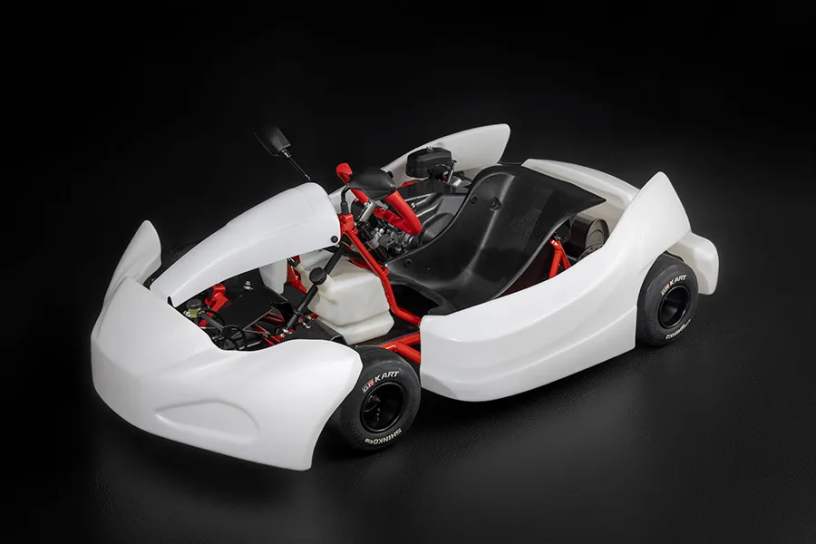
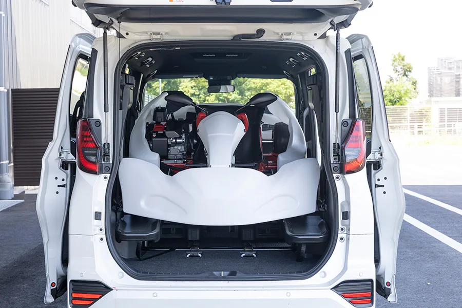
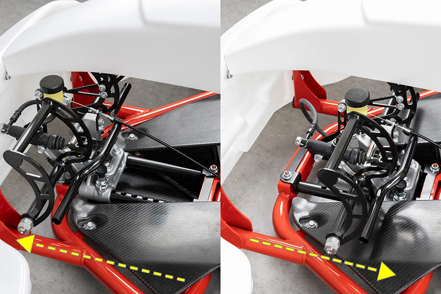
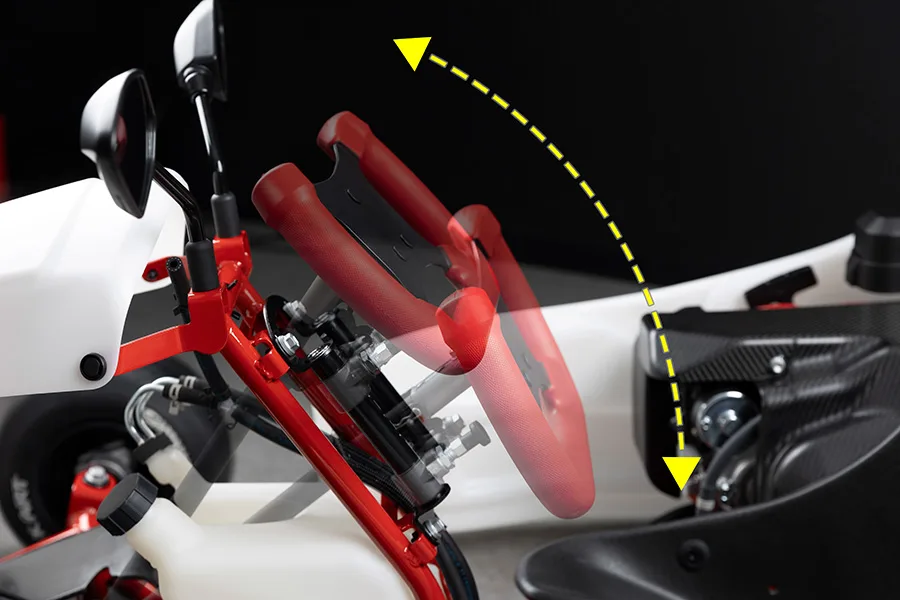
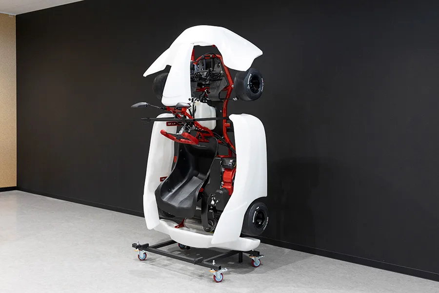
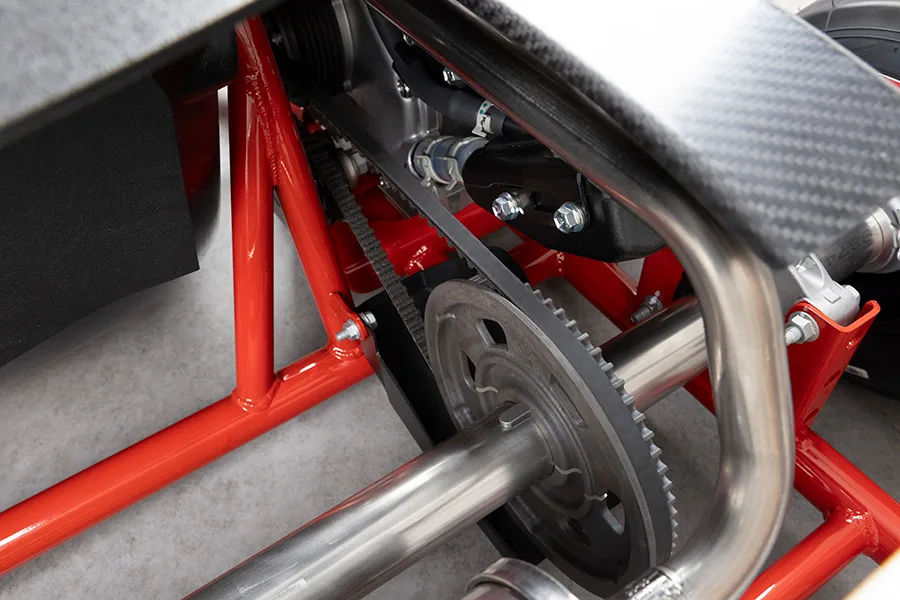

▲ 토요타 가주 레이싱(GR)이 일본에서 정식 판매를 시작한 입문용 레이싱카트 'GR KART'. 385,000엔이라는 파격적인 가격이 눈길을 끈다. (사진=토요타 글로벌 뉴스룸)
① 385,000엔짜리 레이싱카트, 토요타가 진짜로 내놨다
지피코리아는 최근 보도에서 토요타의 모터스포츠 서브 브랜드 가주 레이싱(GR)이 300만원대 레이싱카트 'GR KART'를 일본에서 정식 출시했다고 전했다. 지피코리아 원문에서 확인 가능 → 토요타 글로벌 뉴스룸에 게재된 공식 자료에 따르면 GR KART는 2026년 9월 10일부터 일본 전역에서 판매를 시작했으며, 소비세 포함 가격은 385,000엔, 우리 돈으로 약 335만원 수준이다.
미국 매체 디 오토피안(The Autopian) 역시 이 소식을 다루며 GR KART 가격을 385,000엔, 약 2,500달러로 소개했다. 경쟁 레이싱카트 제품 대비 절반 수준의 파격적인 가격이라는 점을 강조했는데, 실제로 정식 레이싱카트는 통상 엔진·섀시·타이어 등을 별도로 구성하면 수백만 원대 후반까지 치솟는 경우가 많아, 이번 GR KART의 가격표는 업계에서도 이례적이라는 평가다. The Autopian 원문에서 확인 가능 →
▲ 흰색 카울을 걷어내면 빨간색으로 도장된 튜브 프레임과 215cc 엔진, 벨트 드라이브 계통이 고스란히 드러난다 ⓒ Toyota Motor Corporation
② 가격만큼 중요한 '판매 방식' — 어디서, 어떻게 사나
GR KART는 완성차처럼 대리점에서 구매해 바로 몰고 나가는 제품이 아니다. 토요타 글로벌 뉴스룸에 따르면 GR KART는 일본 전국 36개 카트장과 7개 GR 개러지에서 판매되며, 일반 도로 운행이 불가능한 경기·연습용 차량이다. 즉 구매자는 카트장 등 폐쇄된 서킷 환경에서만 GR KART를 운용할 수 있다.
액세서리와 소모품은 온라인 쇼핑몰 라쿠텐이치바(Rakuten Ichiba)를 통해서도 구매할 수 있도록 채널을 열어뒀다. 카트 본체는 오프라인 거점에서, 소모품은 온라인에서 손쉽게 채울 수 있게 한 셈이다. 제원은 다음과 같다.
| 항목 | 규격 |
|---|---|
| 가격 | 385,000엔(소비세 포함, 약 335만원) |
| 전장 × 전폭 × 전고 | 1,820mm × 1,160mm × 670mm |
| 휠베이스 | 1,045mm |
| 무게 | 83kg |
| 엔진 | 215cc 단기통 OHV |
| 탑승 인원 | 1인승 |
| 대응 신장 | 135~185cm |
| 판매처 | 카트장 36곳, GR 개러지 7곳(부품은 라쿠텐이치바 온라인) |
③ 어린이와 성인이 '한 대'를 함께 탄다는 것의 의미

▲ GR 카트는 차체를 분해하지 않고도 토요타 노아·복시 같은 미니밴 트렁크에 그대로 실을 수 있도록 설계됐다 ⓒ Toyota Motor Corporation
GR KART의 가장 큰 특징은 한 대의 카트를 어린이부터 성인까지 함께 사용할 수 있도록 설계했다는 점이다. 135cm의 어린이부터 185cm의 성인까지 대응하는 신장 범위를 확보하기 위해 페달 슬라이드와 스티어링 휠 틸트 기능을 갖췄다. 가족 구성원마다 별도의 카트를 마련할 필요 없이, 체형에 맞춰 조절해가며 한 대를 돌려 타는 방식이다.

▲ 페달 어셈블리를 전후로 슬라이드시켜 탑승자의 다리 길이에 맞출 수 있다 ⓒ Toyota Motor Corporation

▲ 스티어링 휠 역시 틸트 각도를 조절해 체형이 다른 탑승자도 같은 카트를 편하게 다룰 수 있도록 했다 ⓒ Toyota Motor Corporation
이런 조절 기능은 기존 입문용 레이싱카트 시장의 관행과는 다른 접근이다. 통상 카트장에서 대여하거나 개인이 구매하는 카트는 특정 체형대에 맞춰 시트와 페달 위치가 고정된 경우가 많아, 가족 구성원의 키 차이가 크면 렌털 카트를 이용하거나 각자 카트를 따로 마련해야 했다. GR KART는 이 조절 범위를 하나의 차체 안에 통합해, 초기 구매 비용을 가족 단위로 분산시킬 수 있다는 점에서 가격 이상의 실질적인 이점을 제공한다는 평가를 받는다.
보관과 이동의 편의성도 고려했다. 차체를 분해하지 않고도 토요타의 인기 미니밴 노아(Noah)·복시(Voxy) 트렁크에 그대로 실을 수 있고, 세워서 보관하는 수직 보관 방식도 지원해 좁은 차고나 창고에서도 공간을 아낄 수 있다. 벨트 드라이브 방식과 오토 텐셔너를 적용해 체인 방식 대비 기름때가 덜 묻고 정기적인 장력 조정이 필요 없다는 점도 초보자 친화적인 설계로 꼽힌다.

▲ 이동식 거치대 위에 수직으로 세워 보관하는 GR 카트. 좁은 공간에서도 효율적인 보관이 가능하다 ⓒ Toyota Motor Corporation
④ 아키오 도요다가 원하는 '야구·축구 같은 모터스포츠'

▲ 체인 대신 벨트 드라이브와 오토 텐셔너를 적용해 정기적인 정비 부담을 크게 줄였다 ⓒ Toyota Motor Corporation
The Autopian은 이번 GR KART 출시의 배경으로 토요타 아키오 도요다 회장이 오랫동안 강조해온 목표, 즉 모터스포츠를 야구나 축구처럼 더 많은 사람이 부담 없이 즐길 수 있는 활동으로 만들겠다는 구상을 꼽았다. 진입장벽을 낮추고 유지관리를 간소화해 초보자가 카트 입문을 시작하고 꾸준히 이어갈 수 있도록 하는 것이 이번 프로젝트의 핵심 철학이라는 설명이다.
토요타 글로벌 뉴스룸에 따르면 GR KART는 아이치현 가마고리시에 위치한 'GR KART 워크숍'에서 생산된다. 소규모 생산 거점의 특성을 살려 새로운 아이디어와 기술을 빠르게 시험해볼 수 있다는 점도 강조됐다. 토요타 생산방식(TPS) 원칙을 적용해 원가를 낮췄다는 점 역시 385,000엔이라는 가격을 가능케 한 배경으로 꼽힌다. 모터스포츠 저변 확대를 위해 완성차 브랜드가 직접 엔트리급 레이싱카트 생산·유통까지 손댄 사례로, GR 브랜드의 저변 확대 전략이 서킷을 넘어 카트장까지 확장된 모습이다.
GR 브랜드는 그동안 GR 야리스·GR 코롤라 같은 고성능 양산차와 GR86 등 스포츠카 라인업으로 모터스포츠 이미지를 쌓아왔고, GR 개러지 매장망과 각종 드라이빙 체험 프로그램을 통해 일반 소비자와의 접점도 넓혀왔다. GR KART는 이 확장선에서 진입 장벽이 가장 낮은 영역, 즉 어린이와 운전면허가 없는 사람까지 아우르는 카트 레이싱으로 저변을 넓히려는 시도로 볼 수 있다. 완성차 브랜드가 고성능 모델 판매에 그치지 않고 모터스포츠 입문 단계의 장비 생산·유통까지 직접 맡는 사례는 흔치 않다는 점에서, 이번 GR KART는 GR 브랜드 전략의 저변에 해당하는 실험으로 평가된다.
⑤ 일본 한정 판매의 아쉬움… 한국 상륙 가능성은
현재까지 GR KART는 일본 국내 판매로만 한정돼 있다. 지피코리아와 The Autopian 모두 국내(한국) 출시나 해외 판매 계획에 대해서는 별도로 확인된 바가 없다고 전했다. 카트장 인프라와 유통망이 일본 현지 사정에 맞춰 구성된 만큼, 당장 해외 판매로 확장되기까지는 시간이 걸릴 것으로 보인다.
다만 국내에도 대중적인 카트 레이싱 인프라가 꾸준히 늘고 있고, 저렴한 입문용 레이싱카트에 대한 수요 역시 존재하는 만큼, GR KART의 판매 실적과 반응에 따라 향후 아시아 인접 시장으로의 확장 가능성도 배제할 수는 없다. 토요타가 이번 프로젝트를 통해 모터스포츠 저변 확대라는 목표를 실제 판매 성과로 증명해낸다면, GR 브랜드의 다음 행보가 일본 밖으로 이어질지도 관심사다.